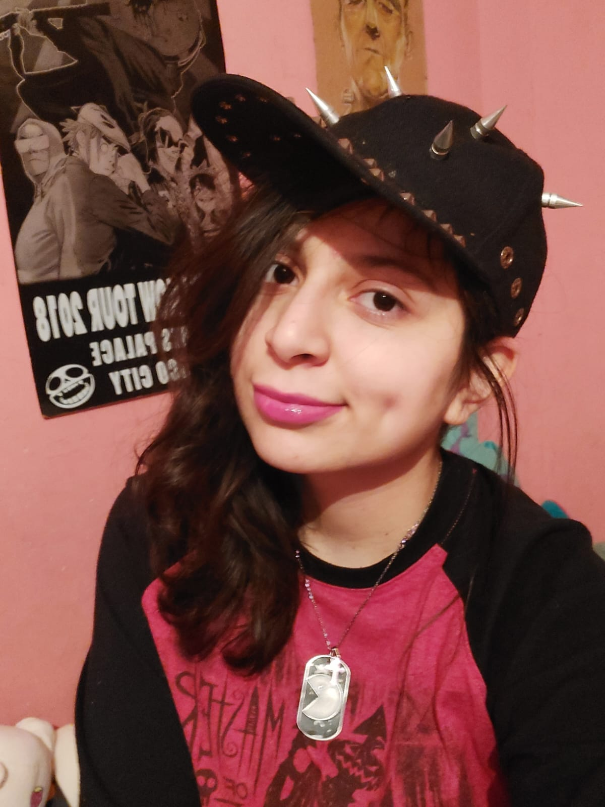

Me presento, soy Ally Rojas

Soy estudiante de la carrera de ingeniería mecánica en la UNAM y formo parte del proyecto TECNOLOCHICAS. Tengo la grata experiencia de salir de la zona de confort que me han dotado de habilidades competentes donde aprendí que lo mas increíble de adquirir un nuevo conocimiento es comprenderlo para ser capaz de compartirlo con aquellos que muestran interés.
Mi misión es llevar al siguiente nivel mi conocimiento en diversas áreas de ingeniería para ser un elemento con empeño de suma importancia para mi país, mi alma mater y mi familia.
Desarrollo Web
Utilizo diversas tecnologías como HTML, CSS, JavaScript, Bootstrap, C++, Python, CNC, entre otros, para realizar proyectos en un ambiento ingenieril y docente.
Artículos
Soy una contribuyente junior de construcción colectiva de conocimiento para que otros avancen en un campo específico como la tecnología de manera clara, concisa y fidedigna.
Estudiante
Estudiante de la carrera de Ingeniería Mécanica en la UNAM, embajadora de TECNOLOCHICAS de 4 cursos diferentes, aprendiz de lenguajes de programación para diversos proyectos.


Ally Rojas demostró ser una buena estudiante mientras estuvo en el bootcamp de Tecnolochicas PRO. Mostró bastante interés en desarrollar sus habilidades como programadora web y realizó proyectos muy interesantes.
Nancy Salazar
Ingeniera en TI, instructora de tecnolochicas PRO
Es una persona muy dedicada en todo lo que hace, siempre se esfuerza al máximo y pone corazón a cada proyecto que se le atraviesa. Una chica admirable de la cual siempre aprendes algo más.
Fernando Díaz
Licenciado en construcción de estructuras
Ally ha demostrado ser una persona que ejerce distintas funciones en distintas áreas cumpliendo sus misiones asignadas. Ella siempre supera las expectativas que uno podría tener.
Luis Montiel
Oficial de Sanidad Militar en la SEDENA